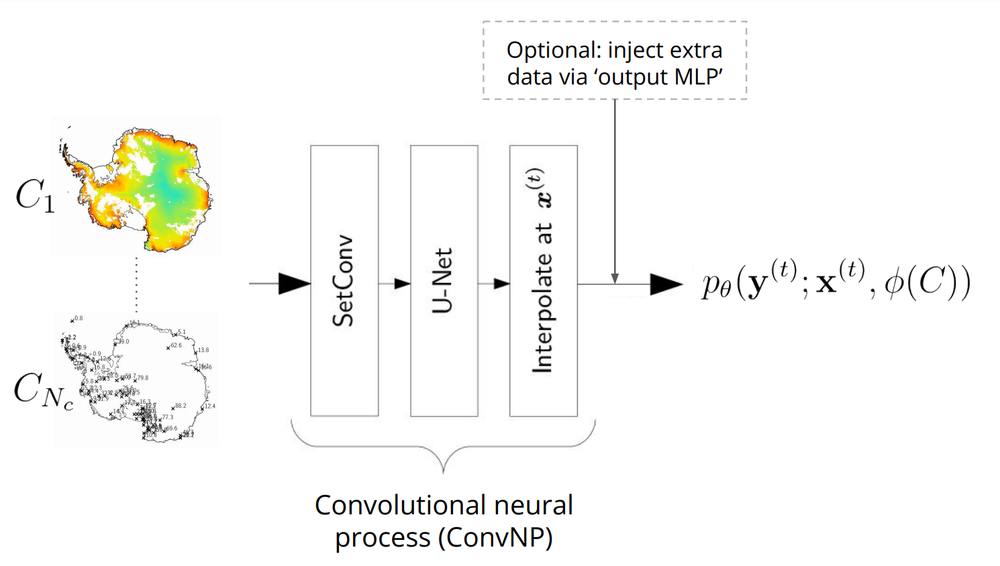

ConvNP#
The ConvNP class implements a convolutional neural process, and is a subclass of DeepSensorModel.
This page will walk through the ConvNP architecture, explain important features, and provide some tips for using the model.
For further background reading, check out the Resources page.
See also
The ConvNP class wraps around the fanstastic neuralprocesses library by Wessel Bruinsma. Go and give it a star to show your appreciation! ⭐
Note
The ‘ConvNP’ is actually a class of model architectures, rather than a single model.
There are different variants of the ConvNP, such as the conditional NP (ConvCNP), the Gaussian NP (ConvGNP), and the
latent NP (ConvLNP). Each of these can be instantiated from the ConvNP class by initialising the model with
different hyperparameters. By default, the ConvNP initialises a ConvCNP with Gaussian marginals.
See the further reading options above if you are still confused after reading this page!
ConvNP architecture#
Here is a high-level schematic of the ConvNP architecture used in DeepSensor:
{kind=link}
The ConvNP learns: \(p_\theta ( \mathbf{y}^{(t)} ; \mathbf{x}^{(t)}, \phi(C))\), where \(p_\theta\) specifies a predictive distribution over target values \(\mathbf{y}^{(t)}\) given target locations \(\mathbf{x}^{(t)}\) and the context data \(C\). All the distribution parameters \(\phi\) (such as the mean and variance of a Gaussian likelihood) depend on the entire context set \(C\), including the \(y\)-values! One effect of this is that the ConvNP’s uncertainty can hypothetically become more uncertain if neighbouring observations disagree. This makes the ConvNP far more flexible than standard probabilistic models, like GPs.
Other benefits of the ConvNP are that it can handle:
Fusing multiple context sets
Off-the-grid and gridded modalities
Multi-resolution data
Missing data
Predicting at arbitrary target locations
Predicting multiple (disjoint) target sets
Uncertainty quantification
\(O(N)\) inference cost (for most variants)
Caution
It’s important to note that the flexibility of the ConvNP makes it a data hungry model.
It has to learn how to condition on data from scratch, which requires
seeing many examples of different context sets and target sets during training.
The TaskLoader provides the necessary functionality for this.
However, if your data is spatially or temporally sparse (and there isn’t
a more abundant dataset to transfer learn from), then the ConvNP may not be
the best model for your use case.
Initialising a ConvNP#
The key arguments for initialising a ConvNP are:
A
DataProcessor: Used to inherit the high-level.predictmethod from theDeepSensorModelbase class (detailed in the Prediction page).A
TaskLoader: Under the hood, DeepSensor will use theTaskLoader’s context/target data and configuration to infer sensible defaults for hyperparameters that are not set by the user.
import deepsensor.torch
from deepsensor.model import ConvNP
task_loader = TaskLoader(
context=[station_df["TAVG"], era5_ds, land_mask_ds],
target=station_df["TAVG"],
aux_at_targets=aux_ds,
links=[(0, 0)],
)
print(task_loader)
TaskLoader(3 context sets, 1 target sets)
Context variable IDs: (('TAVG',), ('2m_temperature', '10m_u_component_of_wind', '10m_v_component_of_wind'), ('GLDAS_mask',))
Target variable IDs: (('TAVG',),)
Auxiliary-at-target variable IDs: ('elevation', 'tpi')
model = ConvNP(data_processor, task_loader, internal_density=500)
dim_yc inferred from TaskLoader: (1, 3, 1)
dim_yt inferred from TaskLoader: 1
dim_aux_t inferred from TaskLoader: 2
Setting aux_t_mlp_layers: (64, 64, 64)
encoder_scales inferred from TaskLoader: [0.001, 0.0022727272007614374, 0.0022727272007614374]
decoder_scale inferred from TaskLoader: 0.002
print(model)
ConvNP with config:
{
"dim_x": 2,
"dim_yc": [
1,
3,
1
],
"dim_yt": 1,
"dim_aux_t": 2,
"dim_lv": 0,
"conv_arch": "unet",
"unet_channels": [
64,
64,
64,
64
],
"unet_resize_convs": true,
"unet_resize_conv_interp_method": "bilinear",
"aux_t_mlp_layers": [
64,
64,
64
],
"likelihood": "het",
"unet_kernels": 5,
"internal_density": 500,
"encoder_scales": [
0.001,
0.0022727272007614374,
0.0022727272007614374
],
"encoder_scales_learnable": false,
"decoder_scale": 0.002,
"decoder_scale_learnable": false,
"num_basis_functions": 64,
"epsilon": 0.01
}
The ConvNP’s internal grid#
The ConvNP uses a discretised internal grid to process the context data.
The density of internal grid points is defined by the internal_density parameter.
An internal_density of 500 means a 1x1 patch of input space will contain 500x500 internal grid points.
Generally, the internal_density should be as high as the highest-resolution context or target variable.
Beyond this point, increasing the internal_density will not improve the model’s performance.
Thankfully, DeepSensor will determine the highest-resolution variable and set the internal_density under-the-hood
if you don’t specify internal_density in the ConvNP constructor.
However, the computationl cost of the model scales quadratically with internal_density, so
you may wish to lower the internal_density to speed up training and inference.
SetConv context encoding#
The SetConv encoder maps the various context sets onto the ConvNP’s internal grid.
This works by placing a Gaussian kernel at each \((\mathbf{x}, \mathbf{y})\) context observation, weighted by the \(N\)-D observation values \(\mathbf{y}\), and then evaluating the sum of the kernels on the internal grid. These \(N\) channels are called the ‘data channels’.
Each encoded context set also has a ‘density channel’, formed using the same Gaussian kernel procedure but without weighting the kernels by the observation values, capturing the density of context observations and revealing areas of missing data.
The output of the SetConv encoder for a particular collection of context sets is the concatenation of all the density and data channels for each context set in a Task.
task = task_loader("2015-06-25", "all", "all")
encoding = deepsensor.model.nps.compute_encoding_tensor(model, task)
print(f"SetConv encoding tensor shape: {encoding.shape}")
SetConv encoding tensor shape: (1, 8, 432, 608)
The gridded context encoding of a particular Task can be visualised using the deepsensor.plot.context_encoding function.
This can also be an extremely useful debugging tool. For example:
Help with understanding the
context_samplingschemes provided by theTaskLoader. Try using differentcontext_samplingschemes and visualise the SetConv encoding to see how the context sets are sampled (as well as printing theTaskto see the data shapes).Do the length scales of the encoded data seem reasonable (i.e. avoids blurring high frequency components while not being so small to induce checkerboard artefacts)?
Are the channel magnitudes in the encoding reasonable?
Are there any nan values?
fig = deepsensor.plot.context_encoding(model, task, task_loader)
It’s tricky to see the encoded station context points, so let’s zoom in on that context set specifically to get a feel for how the ConvNP receives station data:
fig = deepsensor.plot.context_encoding(model, task, task_loader, context_set_idxs=0, size=7)
Breaking ConvNP stationarity using auxiliary variables#
The convolutional architecture of U-Net module of the ConvNP is translation equivariant.
This means shifting the context data results in a corresponding shift in the output prediction.
If we only had one context set, the ConvNP would be stationary.
However, environmental data is often highly spatially non-stationary.
The behaviour of geophysical variables can vary significantly in different regions of the globe.
Modelling this spatial non-stationarity is important for making accurate predictions from the
available data.
A trick for breaking stationarity/translation equivariance in the ConvNP is to add auxiliary variables to its
context sets.
Now, if an observation is shifted, the static auxiliary variable/s will be different, and the ConvNP prediction
will also be different.
It is generally advisable to use auxiliary variables that are physically grounded (rather than hand-crafted features like latitude/longitude). Elevation can be a good auxiliary variable to use, as it is often correlated with surface geophysical variables, and it allows the model to transfer knowledge about topographic effects from one region to another.
To add temporal non-stationarity, we can also add a circular time variable to one of the context sets.
This is shown above with the cos_D and sin_D variables (the cosine and sine of the day of year).
DeepSensor provides a construct_circ_time_ds function for this purpose (shown in one of the collapsed
code cells above).
Receptive field#
The use of a convolutional architecture (U-Net) in the ConvNP model means that the model has a receptive field. This is the area of the input data that influences the prediction at a given point. The receptive field is a function of the U-Net architecture, such as number of layers, filter size, and internal discretisation density.
The receptive field can be visualised using the deepsensor.plot.receptive_field function. This will unnormalise the receptive field and plot it on a map of the globe, which can be useful for understanding the spatial extent of the receptive field.
Some things to consider are:
Is the receptive field too large (i.e. much larger than the range of context and target data)? This can cause excessive zero-padding.
Is the receptive field too small (i.e. smaller than the correlation length scale between context and target data)? The
ConvNPcannot learn correlations greater than the receptive field.
You can increase/decrease the receptive field by:
Increasing/decreasing the number of layers in the U-Net
Increasing/decreasing the filter size in the U-Net
Decreasing/increasing the internal discretisation density of the U-Net
Note that the first two options will also affect the number of parameters in the model, decreasing or increasing model capacity. To counteract this, the number of channels in the U-Net (which has no effect on receptive field) can be adjusted.
import cartopy.crs as ccrs
import cartopy.feature as cf
fig = deepsensor.plot.receptive_field(model.model.receptive_field, data_processor, ccrs.PlateCarree(), "europe")
fig.axes[0].add_feature(cf.BORDERS, linestyle=':')
<cartopy.mpl.feature_artist.FeatureArtist at 0x7f9edefdea90>
The likelihood parameter#
The likelihood parameter specifies the output distribution of the ConvNP.
The current options for this kwarg are:
"cnp"(the default): Conditional neural process (CNP) with a Gaussian likelihood. Here, ‘conditional’ means that the target variables are modelled as conditionally independent given the context set (i.e. the model does not learn correlations between the target variables)."cnp-spikes-beta": CNP with two delta functions (spikes) at 0 and 1, and a Beta distribution between 0 and 1. Useful for modelling data that lies in [0, 1] (e.g. fractional cloud cover)."bernoulli-gamma": CNP with a delta function at 0, and a Gamma distribution. Useful for modelling data that lies in [0, inf) (e.g. precipitation)."gnp": Gaussian neural process (GNP) with a joint Gaussian likelihood. This is a generalisation of the CNP that allows for correlations between the target variables.
Saving and loading a ConvNP#
Similarly to the DataProcessor and TaskLoader objects, a ConvNP object can be saved using the save method, and then loaded using the ConvNP constructor.
model.save("../deepsensor_config/")
model_loaded = ConvNP(data_processor, task_loader, "../deepsensor_config/")
mean_bef = model.mean(task)
mean_loaded = model_loaded.mean(task)
print(np.allclose(mean_bef, mean_loaded))
True